전자계산기제어산업기사(구) (2002-09-08 기출문제)
1과목: 프로그래밍일반
1. 운영체제를 기능상 분류했을 때, 처리(processing) 프로그램에 해당하지 않는 것은?
- language translator program
- service program
- problem program
- supervisor program
(정답률: 알수없음)

2. C 언어에서 데이터 형식을 규정하는 서술자에 대한 설명으로 옳지 않은 것은?
- %d : 10진 정수
- %c : 문자
- %s : 문자열
- %f : 16진 정수
(정답률: 알수없음)
3. CPU에 채널이나 입, 출력 기기의 변화를 알리거나, 데이터의 I/O 종료 오류 발생시 발생하는 인터럽트는?
- 입/출력 인터럽트
- SVC 인터럽트
- 외부 인터럽트
- 프로그램 검사 인터럽트
(정답률: 알수없음)
4. 문함수 Y(X)=(A*X)**2+B*X 일 때 A=1.0, B=2.0, X=2.0 이면 Z=Y(Y(X))일 때 Z의 값은 얼마가 되겠는가?
- 1752.0
- 80.0
- 528.0
- 8.0
(정답률: 알수없음)
5. 이항(binary) 연산에 해당하지 않는 것은?
- AND
- OR
- XOR
- MOVE
(정답률: 알수없음)
6. 파서가 입력을 처리할 때, 이를 스캔(scan)하는 방향은?
- 긴쪽에서 짧은 쪽으로 scan 한다.
- 모든 입력을 동시에 scan 한다.
- 왼쪽에서 오른쪽으로 scan 한다.
- 오른쪽에서 왼쪽으로 scan 한다.
(정답률: 알수없음)
7. 구문도표(syntax diagram) 표기시 사용되는 기호가 아닌 것은?
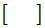
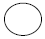
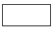
- →
(정답률: 알수없음)
8. 기계어의 설명으로 옳지 않은 것은?
- 프로그램의 실행 속도가 빠르다.
- 프로그램의 유지 보수가 용이하다.
- 호환성이 없고 기계마다 언어가 다르다.
- 2진수를 사용하여 데이터를 표현한다.
(정답률: 알수없음)
9. 구조적 프로그램의 기본 구조가 아닌 것은?
- 순차(sequence)구조
- 조건(condition)구조
- 일괄(batch)구조
- 반복(repetition)구조
(정답률: 알수없음)
10. 시스템 프로그래밍에 가장 적당한 언어는?
- BASIC
- C
- COBOL
- FORTRAN
(정답률: 알수없음)
11. 시간 구역성(temporal locality)의 예가 아닌 것은?
- 순환(looping)
- 부프로그램(subprogram)
- 배열 순례(array traversal)
- 스택(stack)
(정답률: 알수없음)
12. 번역의 가장 기본적인 단계로 나열된 문자들을 기초적인 구성요소들인 식별자, 구분 문자, 연산기호, 핵심어, 주석 등으로 그룹화 하는 단계는?
- 어휘 분석
- 구문 분석
- 의미 분석
- 코드 생성
(정답률: 알수없음)
13. 다음 프로그램 중 성격이 나머지 셋과 다른 것은?
- assembler
- compiler
- interpreter
- linker
(정답률: 알수없음)
14. 문자열 대치, 복사, 치환 등과 같은 문자열의 조작을 편리하게 수행할 수 있도록 여러 가지 기능을 제공하며, 스트림 자료 활용의 예가 많은 언어는?
- SNOBOL
- C
- PL/1
- ADA
(정답률: 알수없음)
15. C 언어의 기억 클래스 종류가 아닌 것은?
- 자동 변수(automatic)
- 동적 변수(dynamic)
- 레지스터 변수(register)
- 외부 변수(external)
(정답률: 알수없음)
16. 객체지향언어(Object-Oriented Programming Language)에서 하나 이상의 유사한 객체(object)들을 묶어서 하나의 공통된 특성으로 표현한 것을 무엇이라 하는가?
- 클래스(class)
- 행위(behavior)
- 사건(event)
- 메시지(message)
(정답률: 알수없음)
17. 두 개의 피연산자를 취하는 이항(binary) 연산자 표현에 적합하며, 연산 기호가 두 피연산자 사이에 놓여지는 표기법은?
- 전위
- 후위
- 복합
- 중위
(정답률: 알수없음)
18. 다음의 C 언어 연산자 기호 중에서 우선순위가 가장 먼저인 것은?
- &&
- ||
- =
- /
(정답률: 알수없음)
19. 상향식(bottom-up) 파서에 해당하는 것은?
- Predictive parser
- LL parser
- Recursive descent parser
- Shift reduce parser
(정답률: 알수없음)
20. 인터프리터(Interpreter) 기법을 사용하는 언어는?
- BASIC
- C
- PASCAL
- PL/1
(정답률: 알수없음)
2과목: 전자계산기구조
21. 오퍼랜드 필드가 메모리내의 주소를 참조하여 그 주소로부터 유효번지를 계산하여 메모리에 접근하는 주소지정방식은?
- Relative Addressing Mode
- Indirect Addressing Mode
- Index Addressing Mode
- Immediate Addressing Mode
(정답률: 알수없음)
22. 컴퓨터 조작자가 의도적으로 인터럽트를 발생 할 수 있다. 이 경우의 인터럽트 종류는?
- Machine check interrupt
- Program interrupt
- External interrupt
- I/O interrupt
(정답률: 알수없음)
23. 가상(Virtual) 기억체제에 관한 설명 중 옳지 않은 것은?
- 컴퓨터의 속도를 개선하기 위한 방법이다.
- 주기억장치와 보조 기억장치가 계층 기억 체제를 이루고 있다.
- 컴퓨터의 기억용량을 확장하기 위한 방법이다.
- 하드웨어에 의한 것이 아니라 소프트웨어에 의해 실현된다.
(정답률: 알수없음)
24. 음수를 2의 보수로 표현할 때, 8비트로 나타낼 수 있는 정수의 범위는?
- -27 ~ +27
- -28 ~ +28
- -27 ~ +27-1
- -27-1 ~ +27
(정답률: 알수없음)
25. 프로세서의 제어 장치에 대한 설명 중 옳지 않은 것은?
- 고정 배선 방법과 마이크로프로그램 방식이 있다.
- 마이크로프로그램 방식은 고정 배선 방법보다 더 비싸다.
- 고정 배선 방법은 부품의 수는 최대화 되기는 하나 작동 속도를 높이는데 목표가 있다.
- 마이크로프로그램 방식에서는 마이크로프로그램을 저장하기 위한 제어 메모리가 필요하다.
(정답률: 알수없음)
26. 다음 그림은 무엇을 설명한 기능 블럭인가?
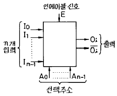
- 디코더(decoder)
- 디멀티플렉서(demultiplexer)
- 카운터(counter)
- 멀티플렉서(multiplexer)
(정답률: 알수없음)
27. 기억장치에서 1234H 번지는 ( A )페이지에서 ( B )번지라고 할 수 있다. ( )안의 A와 B는?
- A=1234H, B=1234H
- A=1234H, B=OH
- A=34H, B=12H
- A=12H, B=34H
(정답률: 알수없음)
28. 주소 부분이 하나밖에 없는 1-주소 명령 형식에서 결과 자료를 넣어 두는데 사용하는 레지스터는?
- 어큐뮬레이터(accumulator)
- 스택(stack)
- 인덱스(index) 레지스터
- 범용 레지스터
(정답률: 알수없음)
29. 인터럽트 반응 시간(interrupt response time)에 대한 설명으로 옳은 것은?
- 인터럽트 요청 신호를 발생한 후부터 인터럽트 취급 루틴의 수행이 시작될 때까지이다.
- 일반적으로 하드웨어에 의한 방식이 소프트웨어에 의한 처리보다 느리다.
- 인터럽트 반응 속도는 하드웨어나 소프트웨어에 필요한 기억 공간에 의한 영향이 없다.
- 인터럽트 요청 신호의 발생 후부터 취급 루틴의 수행이 완료될 때까지의 시간이다.
(정답률: 알수없음)
30. PUSH, POP 명령어 처리시 처리되는 메모리 주소는?
- 스택의 데이터
- AX의 데이터
- SI의 데이터
- DI의 데이터
(정답률: 알수없음)
31. 컴퓨터의 메모리 용량이 64K×32bit라 하면 MAR(Memory Address Register)와 MBR(Memory Buffer Register)는 각각 몇 비트인가?
- MAR:16, MBR:16
- MAR:32, MBR:16
- MAR: 8, MBR:16
- MAR:16, MBR:32
(정답률: 알수없음)
32. 다음 중 조합 논리 회로는?
- 멀티플렉서
- 레지스터
- 카운터
- RAM
(정답률: 알수없음)
33. 2 개의 6 bit word를 위한 comparator를 만들기 위하여 몇 개의 exclusive NOR gate가 필요한가?
- 2
- 3
- 6
- 12
(정답률: 알수없음)
34. MOD-5카운터를 설계하려고 할 때, 최소한의 Flip-Flop의 갯수는 몇 개인가?
- 1
- 2
- 3
- 4
(정답률: 알수없음)
35. 중단(interrupt) 발생 시 수행되어야 할 일이 아닌 것은?
- 수행 중인 프로그램을 보조기억 장치에 보관한다.
- 프로그램 카운터의 내용을 보관한다.
- 인터럽트 처리 루틴을 수행한다.
- 어느 장치에서 인터럽트가 요청되었는지를 조사한다.
(정답률: 알수없음)
36. 레지스터의 기본 회로는?
- 증폭기
- 플립플롭
- 변조기
- 발진기
(정답률: 알수없음)
37. 비수치적 연산(논리 연산) 방식에 속하지 않는 것은?
- MOVE
- Shift
- Rotate
- ADD
(정답률: 알수없음)
38. 8 개의 bit로 표현 가능한 정보의 최대 가지수는?
- 8
- 64
- 255
- 256
(정답률: 알수없음)
39. 랜덤 액세스 기억장치(Random access Memory)의 특징은?
- 데이터 입·출력의 고속 처리
- 데이터 입·출력의 순서적 처리
- 데이터 입·출력의 정확한 처리
- 데이터 기억밀도의 조밀화
(정답률: 알수없음)
40. 컴퓨터 제어장치의 기능이 아닌 것은?
- 주기억장치에 data의 Read 와 Write
- interrupt의 발생
- 산술논리 연산의 실행 지시
- 입·출력 장치의 제어
(정답률: 알수없음)
3과목: 마이크로전자계산기
41. 어셈블리어 또는 고급언어로 작성된 프로그램은 실행하기 위해서는 먼저 어셈블링 또는 컴파일링 하게 된다. 이 때 번역된 기계어 프로그램을 무엇이라 하는가?
- 소스 프로그램
- 목적 프로그램
- 리스트 프로그램
- 응용 프로그램
(정답률: 알수없음)
42. 마이크로 컴퓨터에서 CPU의 명령 해독기로부터 나온 명령을 수행하기 위하여 필요한 신호로 바꾸어 각 장치에 전달하는 역할을 하는 장치는?
- 기억장치(memory)
- 번지 해독기(decoder)
- 부호기(encoder)
- 명령 레지스터(IR)
(정답률: 알수없음)
43. 프로그램을 테스트 한 후 출력(output)에 의한 에러(error)를 수정하는 작업을 무엇이라 하는가?
- 테스팅(testing)
- 디버깅(debugging)
- 임프리멘팅(implementing)
- 설계(designing)
(정답률: 알수없음)
44. 특별한 조건이나 신호가 컴퓨터에 의해 인터럽트되는 것을 방지하는 것을 무엇이라고 하는가?
- 벡터 인터럽트
- Polling 방식
- 인터럽트 마스크
- Daisy-Chain
(정답률: 알수없음)
45. 스테틱(static) RAM과 다이나믹(dynamic) RAM의 차이를 설명한 것 중 옳지 않은 것은?
- 다이나믹 RAM이 스테틱 RAM보다 집적도가 크다.
- 스테틱 RAM이 다이나믹 RAM보다 기억 용량이 크다.
- 다이나믹 RAM에는 리플레시(refresh)신호가 필요하다.
- 리플레시 신호는 마이크로프로세서의 클럭(clock)으로 만들어 진다.
(정답률: 알수없음)
46. "CPU는 ( ① )가 지정하는 메모리에서 명령어 코드를 꺼내어( ② )에 저장한 후, ( ③ )는 1 증가하여 다음 프로그램 메모리의 주소를 지정한다."( )에 해당되는 것은?
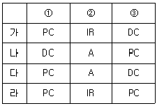
- 가
- 나
- 다
- 라
(정답률: 알수없음)
47. 다중 프로그래밍(Multi-Programming) 기법에 있어서 메모리 관리 기법과 관계가 먼 것은?
- Paging
- Allocation
- Partition
- Segmentation
(정답률: 알수없음)
48. 특정의 비트를 삭제하기 위하여 사용되는 연산은?
- OR 연산
- AND 연산
- 보수 연산
- MOVE 연산
(정답률: 알수없음)
49. subroutine에 관한 설명 중 옳지 않은 것은?
- 주어진 작업을 수행하는 독립된 명령어의 연속이다.
- program의 정상 수행 도중에 주 program의 여러곳에서 그 기능을 수행할 수 있다.
- 외부 장치에서 subroutine으로의 jump를 명령할 수 없다.
- subroutine으로 부터의 귀환명령이 없어도 subprogram이 수행되면 자동적으로 돌아온다.
(정답률: 알수없음)
50. 마이크로 컴퓨터의 입·출력 시스템 구성으로 적당하지 않은 것은?
- 입·출력 제어회로
- 인터페이스 회로
- 함수연산회로
- 입·출력장치
(정답률: 알수없음)
51. 근거리 지역 통신망(LAN)을 접속 형태에 따라 분류할 때 구내 교환기(digital PBX) 등에 의한 중앙 장치가 모든 통신을 집중 제어하는 형태는?
- Bus 형
- Ring 형
- Tree 형
- Star 형
(정답률: 알수없음)
52. 시스템 동작 개시 후 최초로 주기억장치에 프로그램을 로드(load) 하는 것은?
- bootstrap loader
- operating system
- supervisor
- assembler
(정답률: 알수없음)
53. 다음 신호에서 양방향(Bidirectional)으로 신호 전송이 이루어져야 하는 것은?
- 어드레스 버스
- 데이터 버스
- 컨트롤 버스
- 전원 버스
(정답률: 알수없음)
54. 다수의 컴퓨터 시스템이나 단말기 등을 통신 회선으로 연결하여 데이터 통신을 행하는 경우, 통신 제어를 행하기 위한 규약은?
- 폴링(polling)
- 동기(synchronize)
- 프로토콜(protocol)
- 인터페이스(interface)
(정답률: 알수없음)
55. 실행할 명령의 번지(address)와 관계가 깊은 것은?
- CAW(channel address word)
- CCW(channel command word)
- CSW(channel status word)
- PSW(program status word)
(정답률: 알수없음)
56. 어큐뮬레이터(Accumulator)에 대해서 올바르게 설명한 것은?
- 레지스터의 일종으로 산술 연산 또는 논리 연산의 결과를 일시적으로 기억한다.
- 연산 명령의 순서를 기억하는 장치이다.
- 연산 명령이 주어지면 해독하고 기억하는 장소이다.
- 연산 보호를 해독하는 장치이다.
(정답률: 알수없음)
57. 2진수 10011000의 2의 보수(2'S complement)는?
- 01100111
- 10011001
- 01101000
- 10010001
(정답률: 알수없음)
58. 어드레스 선이 16bit이면 몇 개의 번지를 가질 수 있나?
- 64K byte
- 32K byte
- 16K byte
- 8K byte
(정답률: 알수없음)
59. 프로그램 처리 절차를 올바르게 나타낸 것은?
- 원시프로그램입력→ 로드→ 기계어번역→ 실행→ 디버그
- 원시프로그램입력→ 기계어번역→ 디버그→ 로드→ 실행
- 원시프로그램입력→ 디버그→ 기계어번역→ 로드→ 실행
- 원시프로그램입력→ 기계어번역→ 로드→ 실행→ 디버그
(정답률: 알수없음)
60. 다음 용어 설명 중 옳지 않은 것은?
- MAR(Memory Address Register)은 READ하거나 WRITE 될 정보의 번지를 일시적으로 부여한다.
- DMA(Direct Memory Access)는 정보를 메모리에 READ/WRITE 할 때 그 기억장소를 일시적으로 기억한다.
- MDR(Memory Data Register)은 정보를 READ/WRITE 할 때 그 정보 자체를 일시적으로 저장한다.
- RAM(Random Access Memory)은 READ/WRITE를 모두 할 수 있는 메모리이다.
(정답률: 알수없음)
4과목: 논리회로
61. 그림과 같은 전가산기(Full adder)의 입력이 A=1, B=0, C=1일 때 출력의 Sum:So, Carry:Co는?
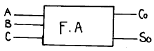
- Co = 0, So = 0
- Co = 0, So = 1
- Co = 1, So = 0
- Co = 1, So = 1
(정답률: 알수없음)
62. 메모리의 size가 2048 × 16 일 때 MAR, MBR의 size는 어떻게 되는가? (단, MAR : Memory Address Register, MBR : Memory Buffer Register)
- MAR=11, MBR=16
- MAR=12, MBR=16
- MAR=11, MBR=8
- MAR=12, MBR=8
(정답률: 알수없음)
63. R-S flip-flop 인 경우 시간 tn에 입력 S =1, R =0 일 때, 시간 tn+1에서의 출력 Q와
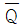
의 상태는?- Q=0,
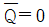
- Q=0,

- Q=1,

- Q=1,
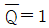
(정답률: 알수없음)
64. 2진수 1000을 등가인 Gray 코드로 바꾸면?
- 0011
- 1100
- 1111
- 0000
(정답률: 알수없음)
65. 다음 그림은 몇 진 카운터인가?
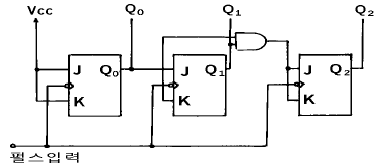
- 동기식 8진 업 카운터
- 비동기식 8진 업 카운터
- 동기식 8진 다운 카운터
- 비동기식 8진 다운 카운터
(정답률: 알수없음)
66. D 플립플롭이 셋업(setup) 시간 = 5ns, 홀드(Hold) 시간 = 10ns, 전파(propagation) 시간 = 15ns 이다. 클럭에지가 발생하기 얼마 전에 데이터가 입력되어야 하는가?
- 5ns
- 10ns
- 15ns
- 30ns
(정답률: 알수없음)
67. 다음 회로의 구성은?
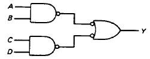
- XOR 회로
- XNOR 회로
- OR-AND 회로
- AND-OR 회로
(정답률: 알수없음)
68. 2-input NOR gate input에 각 각 inverter가 접속되어 있을 때 결과적으로 얻어지는 논리 작용은?
- AND
- OR
- NAND
- NOT
(정답률: 알수없음)
69. 변수의 수(數)가 3이라면 K-map에서 몇 개의 칸이 요구되는가?
- 2
- 4
- 6
- 8
(정답률: 알수없음)
70. 반감산기에서 차를 얻기 위하여 사용되는 게이트는?
- NOR
- OR
- AND
- 배타적 OR
(정답률: 알수없음)
71. 다음과 같은 기호를 논리 기호로 표시하면?
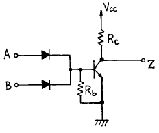
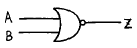
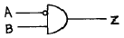
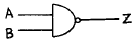
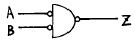
(정답률: 알수없음)
72. 아래의 논리회로는?
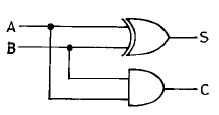
- 일치회로
- 2진 비교기
- 반가산기
- 전가산기
(정답률: 알수없음)
73. 다음 회로에 대한 진리표는?
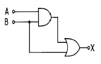
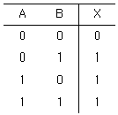
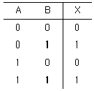
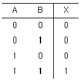
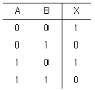
(정답률: 알수없음)
74. 10진수 25를 2진수로 변환하면?
- 10011
- 11001
- 100100
- 100101
(정답률: 알수없음)
75. J-K 플립플롭에서 Jn=Kn=1일 때 Qn+1의 출력 상태는?
- 반전
- 변화가없다
- 1
- 0
(정답률: 알수없음)
76. 1분당 12,000 회전을 하는 자기 드럼(Magnetic Drum)의 평균 호출 시간(Average Access Time)은?
- 5×10-3초
- 2.5×10-3초
- 10×10-3초
- 15×10-3초
(정답률: 알수없음)
77. 직렬 전송 register와 병렬 전송 register의 장·단점을 옳게 설명한 것은?
- 직렬전송 레지스터가 빠르게 동작하나 비경제적이다.
- 직렬전송 레지스터가 빠르게 동작하나 회로가 복잡하다.
- 병렬전송 레지스터가 느리게 동작하나 경제적이다.
- 병렬전송 레지스터가 빠르게 동작하나 회로가 복잡하다.
(정답률: 알수없음)
78. ROM의 설명으로 옳지 않은 것은?
- 코드변환기와 같은 다중 출력을 갖는 조합회로에는 응용이 불가능하다.
- 비 휘발성 소자이다.
- 판독 전용 기억 소자이다.
- 전원이 꺼지더라도 저장된 내용은 지워지지 않는다.
(정답률: 알수없음)
79. 다음 그림과 등가인 게이트는?
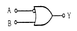
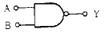
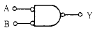
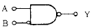
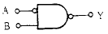
(정답률: 알수없음)
80. 10진 Counter를 구성하려고 한다. F-F을 몇 단으로 하면 가장 적절한가?
- 2
- 3
- 4
- 5
(정답률: 알수없음)
5과목: 정보통신개론
81. 다음 통신선로 중에서 근거리 네트워크(LAN)에서 사용되지 않는 것은?
- 나선
- 꼬임선
- 동축케이블
- 광섬유
(정답률: 알수없음)
82. 다음 중 정보통신의 의미를 가장 폭넓게 표현한 것은?
- 컴퓨터와 통신회선의 결합으로 전송기능에 통신처리 기능이 추가된 데이터 통신
- 컴퓨터와 통신기술이 결합된 것으로 정보처리가 가능한 컴퓨터 통신
- 정보통신망을 이용한 체계적인 정보의 전송을 위한 통신
- 컴퓨터와 통신기술의 결합에 의해 통신처리기능과 정보처리기능은 물론 정보의 변환, 저장과정이 추가된 형태의 통신
(정답률: 알수없음)
83. 위성통신의 특징을 잘못 표현한 것은?
- 광대역 통신이 가능하다.
- 광범위한 지역에 서비스를 제공할 수 있다.
- 대용량, 고품질의 정보 전송이 가능하다.
- 전파지연이 없으나 감쇄현상이 나타날 수 있다.
(정답률: 알수없음)
84. 다음 중 정보통신망의 3대 구성요소가 아닌 것은?
- 단말장치
- 교환장치
- 전송장치
- 저장장치
(정답률: 알수없음)
85. 초당 발생한 신호의 변화 상태로 나타내는 변조속도의 기본 단위는?
- 비트( bit)
- 보(baud)
- 패킷(packet)
- 셀(cell)
(정답률: 알수없음)
86. OSI 7-layer중 표현계층의 기능과 거리가 먼 것은?
- data 표현 형식의 제어
- data의 암호화
- data의 전송제어
- text의 압축수행
(정답률: 알수없음)
87. LAN(Local Area Network)은 사무실내의 정보유통을 위한 유효한 수단으로서 여러 가지 장점을 가지고 있는데, 다음 중 장점에 포함되지 않는 것은?
- 다른 기종간의 통신에 있어서 사무처리의 능률화
- 파일의 공유에 따른 처리의 효율화
- 집중처리의 실현으로 처리시간 단축화
- 기기자원의 공유에 따른 이용효율의 향상
(정답률: 알수없음)
88. 다음 중 프로토콜의 구성 요소가 아닌 것은?
- 구문(syntax)
- 의미(semantic)
- 순서(timing)
- 접속(connection)
(정답률: 알수없음)
89. ISDN 채널 중 기본적인 이용자 채널로 PCM 화된 디지털 음성이나 회선교환 혹은 패킷교환등에 이용되는 채널은?
- A채널
- B채널
- C채널
- D채널
(정답률: 알수없음)
90. 정보통신 System의 구성요소중 정보 전송계 요소에 맞지 않는 것은?
- 신호변환장치
- 전송회선
- 중앙처리장치
- 통신제어장치
(정답률: 알수없음)
91. 데이터의 충돌을 막기 위해 송신 데이터가 없을 때에만 데이터를 송신하고, 다른 장비가 송신중일 때에는 송신을 중단하며 일정시간 간격을 두고 대기하였다가 다시 송신하는 방식을 무엇이라 하는가?
- 토큰 순회버스
- 토큰 순회 링
- CSMA/CD
- CSMA/CA
(정답률: 알수없음)
92. DSU(Digital Service Unit)의 역할은?
- 아날로그 데이터를 디지털 신호로 변환시킨다.
- 디지털 신호를 아날로그 데이터로 변환시킨다.
- 아날로그 신호를 디지털 데이터로 변환시킨다.
- 디지털 데이터를 디지털 신호로 변환시킨다.
(정답률: 알수없음)
93. 공중통신회선에 교환설비, 컴퓨터 및 단말기등을 접속시켜 새로운 부가기능을 제공하는 통신망은?
- LAN
- VAN
- ISDN
- WAN
(정답률: 알수없음)
94. 보오(Baud)속도가 3,200 보오이며, 트리비트(Tri-bit)를 사용하는 경우 몇 bps가 되는가?
- 1200
- 2400
- 4800
- 9600
(정답률: 알수없음)
95. CATV의 일반적인 특징으로 잘못된 것은?
- 단방향통신이다.
- 다채널이다.
- 부가통신서비스를 할 수 있다.
- 수용자의 범위가 한정적이다.
(정답률: 알수없음)
96. 분리된 두장치간에 정보를 교대로 데이타를 교환하는 통신방식을 무엇이라 하는가?
- 단방향통신방식
- 반이중통신방식
- 전이중통신방식
- 포인트 투 포인트방식
(정답률: 알수없음)
97. 운영체제를 구성하는 부분을 두 가지로 나누었을 때 가장 적합한 것은?
- 시스템 프로그램과 응용 프로그램
- 제어 프로그램과 처리 프로그램
- 하드웨어와 소프트웨어
- 중앙처리장치와 주변장치
(정답률: 알수없음)
98. 프로토콜의 계층화에 대한 장점이 아닌 것은?
- 전체적인 오버헤드(over head)가 증가한다.
- 모듈화에 의한 전체 설계가 쉽다.
- 이 기종간의 호환성 유지가 쉽다.
- 한 계층을 수정할 때 다른 계층에 영향을 주지 않는다.
(정답률: 알수없음)
99. 종합정보통신망(ISDN)에 대한 설명으로 부적당한 것은?
- 음성 및 비음성 서비스를 포함한 광범위한 서비스를 제공한다.
- 기능에 의해 기본통신계층, 네트워크계층, 통신처리계층, 정보처리계층으로 분류된다.
- 64Kbps의 디지털 기본 접속기능을 제공한다.
- OSI 참조모델에 정의된 계층화된 프로토콜 구조가 적용된다.
(정답률: 알수없음)
100. 정보통신시스템의 통신회선 종단에 위치한 신호변환장치 중 디지털 전송로에서 단극성 신호를 쌍극성 신호로 변환이 가능한 장치는?
- 지능 모뎀
- 음향결합기
- 코덱
- 디지털 서비스 유니트
(정답률: 알수없음)
1. 자원 관리(Resource Management)
2. 처리(Processing)
3. 입출력(I/O)
4. 파일 관리(File Management)
5. 보안(Security)
6. 네트워킹(Networking)
이 중에서 "supervisor program"은 처리(Processing)에 해당하지 않습니다. Supervisor program은 운영체제의 핵심 부분으로서, 다른 프로그램들을 관리하고 제어하는 역할을 합니다. 이를 통해 운영체제의 안정성과 보안성을 유지하며, 시스템 자원의 효율적인 사용을 도와줍니다. 따라서, "supervisor program"은 자원 관리(Resource Management)와 보안(Security)에 해당합니다.